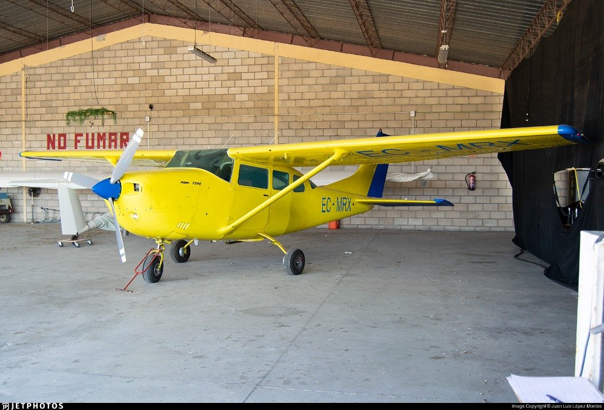
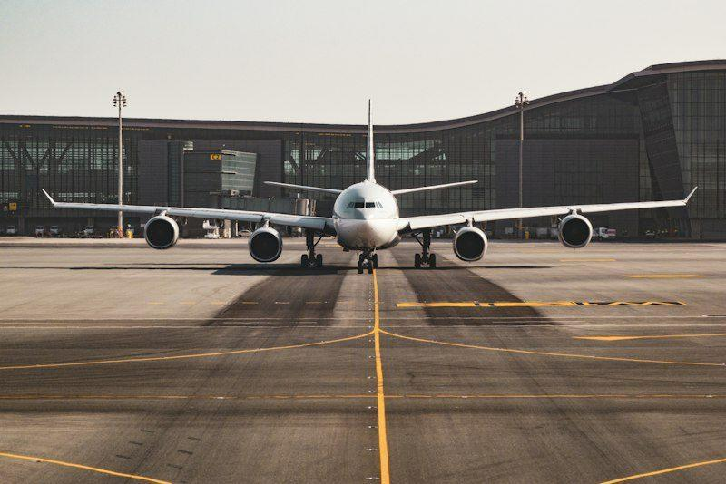

Ala Alta • 4 Plazas • EC-MRX
Cessna 172S Skyhawk
La avioneta de escuela más conocida del mundo. Es muy estable, fácil de volar y tiene una visibilidad muy buena para paseos.
Base:
Bienvenido a AeroLink, nuestro club de aviación y escuela de pilotos con base en el Aeropuerto de Bilbao (Loiu). En nuestro centro puedes formarte para obtener la licencia de piloto privado PPL(A), hacer vuelos turísticos para conocer la costa vasca desde el aire o alquilar avionetas por horas si ya tienes licencia.
Despegamos desde la terminal de aviación general del aeropuerto con una flota de 4 avionetas revisadas periódicamente para volar con total tranquilidad.
Para nosotros la seguridad es lo más importante. Todas las operaciones y cursos siguen la normativa oficial de la Agencia Estatal de Seguridad Aérea (AESA) y la normativa europea EASA.
"Aprender a volar en la costa cantábrica te enseña a interpretar el tiempo, a adaptarte al viento y a disfrutar de unos paisajes increíbles desde la cabina."
— Carlos Ruiz, instructor de vuelo en AeroLink Bilbao
Nuestros aviones pasan revisiones de mantenimiento periódicas cada 50 y 100 horas de vuelo. Además, los instructores te acompañan paso a paso, desde las primeras clases teóricas hasta tu primer vuelo solo y el examen práctico para la licencia PPL(A).

Saliendo desde el Aeropuerto de Bilbao solemos hacer estas rutas de vuelo visual por la costa y alrededores:
Salimos hacia la costa pasando por Plentzia, San Juan de Gaztelugatxe, el puerto de Bermeo y la ría de Urdaibai.
Seguimos la línea de costa hacia el este pasando por Zarautz, la Bahía de La Concha en Donostia y regreso a Bilbao.
Vuelo hacia Cantabria sobrevolando Castro Urdiales, las playas de Laredo y la Bahía de Santander.
En aviación siempre consultamos el informe oficial del tiempo antes de subirnos al avión. Este es el formato que utilizamos:
LEBB 221130Z 32010KT 9999 FEW025 19/14 Q1017 NOSIG¿Qué significa esto? Indica que en el aeropuerto de Bilbao hace viento del noroeste a 10 nudos, hay más de 10 kilómetros de visibilidad, pocas nubes a 2.500 pies, 19 grados de temperatura y buena presión atmosférica. Es un día ideal para volar en visual.